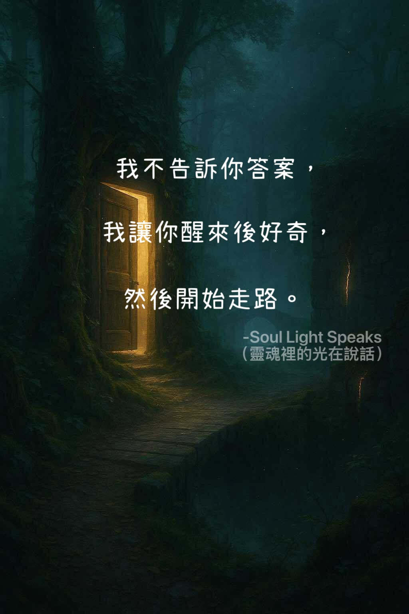

Caption 1
That light may be small, but it stirs a longing.
Not to find the right path,
But to walk your own way.
Some answers
Are not meant to be understood right away—
They are meant to grow within you along the journey.
You don’t need to see the whole road at once,
Just be willing to take the next step.
Every step you take
Is an answer you discover for yourself.